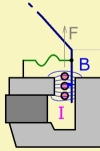
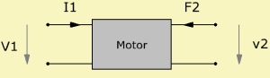
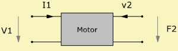

LE Electro Dynamic Model
| Home |
 |
 |
The electro-dynamic motor features an axial motion of a cylindrical voice-coil embedded in a strong radial magnetic field. The more homogeneous and the higher the strength of the static field the more linear is the transduction of the electrical current to the force, which drives the moving assembly.
The inductance of the voice-coil is usually small. Its blocked impedance has a very low value, typically between 2 Ω ... 15 Ω. However, due to its inductivity and further complicated feedback mechanisms between the voice-coil and the iron of the static magnet, the blocked resistance and reactance increases at higher frequencies. The deviations are significant and can be an important factor in designing the driving electronics, such as passive cross-overs. See Voice Coil Parameters.
The current through the voice-coil causes a force in axial direction accelerating the attached mass of the vibrating assembly. This Lorenz force is
F = BL·I
Conversely, the motion of the wire within the static magnet field induces a voltage, which is
V = BL·v
with F force in axial direction between magnet and voice-coil. BL is the product of the magnetic flux density B and the effective length of the wire (within the gap of the magnet). I is the current through the wire. V is the induced open-loop voltage measured if voice coil has velocity, v.
Impedance-Mobility | Impedance-Impedance |
|
The electro-mechanic four-pole of the motor is  Including the voice coil impedance Zvc
|
The electro-mechanic four-pole of the motor is  Including the voice coil impedance Zvc
|